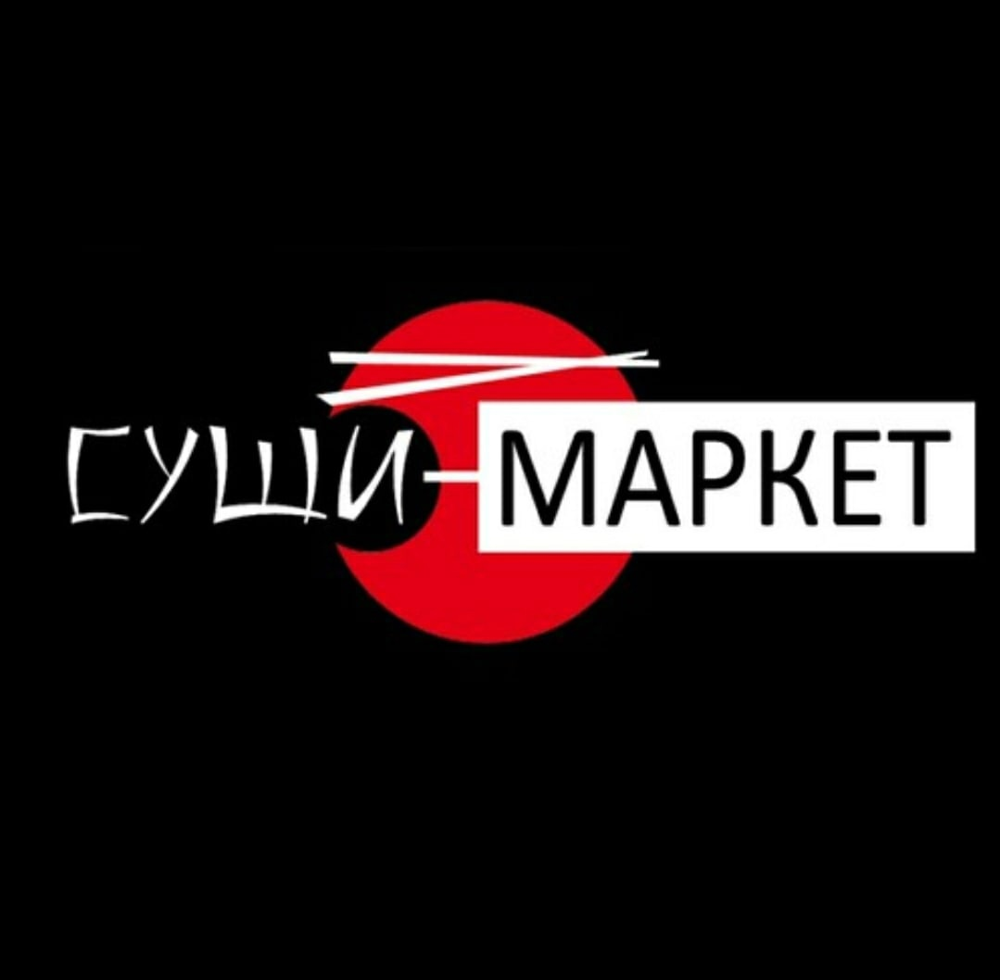

Обо мне
Зовут меня Антон, мне 27 лет. Уже на протяжении 7 лет работаю поваром-сушистом. Прошёл в этой профессии много испытаний. Сейчас же встал на путь Разработчика. Причин тому несколько, обо всём далее.
Устал от работы в общепите. И не потому что тут тяжело или мало вариантов для развития. Тут уходит всё твоё время на работу, ты не живёшь, а работаешь всю жизнь. Рабочий день до 17-18 часов - это какая то заветная мечта.
-
Начало карьеры. СушиWOK. 2016-2017 года
Попал я сюда без опыта, совсем зелёный. Но самое интересное, карьера могла закончиться, даже не начавшись - во второй день стажировки хотелось уйти.
Карьера развивалась динамично, уже через пол года я занял должность Су-шефа, а далее смена руководства и увольнение. -
Киото. 2017-2019 ... 2020-2020
В эту компанию я пришёл после отзывов от своих бывших и в то же время будущих коллег. Требовательное руководство. Появление опыта работы кассиром. Через пол года снова должность старшего сотрудника на торговой точке. Далее увольнение и поездка в командировку уже в другую компанию
-
Суши-Маркет. 2019-2020 ... 2020-2021 ... 2023
Сюда я попал позднее, чем хотелось бы, так как годом ранее было предложение от этой компании, но с переездом в другой город. Но теперь я здесь, в Якутске. Да, там, где зимой -50.
Здесь было и трудно и легко, "марафоны" в 90 дней без выходных тому доказательство. Самое интересное, что я по итогу трижды устраивался в эту компанию и сейчас работаю здесь. Тяжело совмещать с учебой на разработчика, но иду к своей цели шаг за шагом Суши-Маркет -
Имбирь. 2023-2023
Тяжелый момент в жизни настал, устроился туда, что первое подвернулось. Самы негативный опыт на кухне. Зарплату платили, но и штрафовать не забывали. И прям искали за что. Никому бы не советовал туда устраиваться.
-
ИП Бузынников. 2021-2022
Куда пропали 2 года спросите вы? А вот, открыл я собственную торговую точку. Дела были как хорошо, так и не очень. Свой отпечаток оставила и СВО. После были трудные времена, но семейные обстоятельства и вовсе заставили закрыть дело. Это был интересный и полезный опыт. Сейчас же новый этап в жизни.